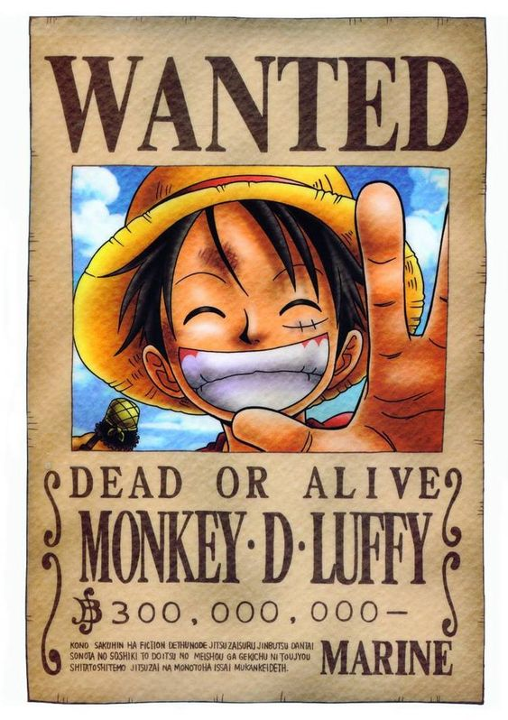
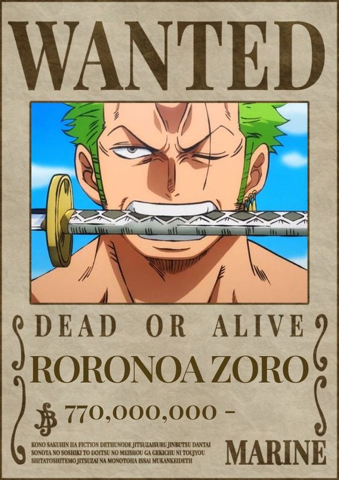

"One Piece" is a Japanese manga (comic) and anime series created by Eiichiro Oda. The manga began serialization in Shueisha's "Weekly Shonen Jump" magazine in July 1997, and it has since become one of the most popular and best-selling manga series in the world.
The story
"One Piece" is a Japanese manga (comic) and anime series created by Eiichiro Oda. The manga began serialization in Shueisha's "Weekly Shonen Jump" magazine in July 1997, and it has since become one of the most popular and best-selling manga series in the world.
The story follows Monkey D. Luffy, a young pirate with the goal of finding the legendary treasure known as "One Piece" and becoming the Pirate King. Luffy gains the ability to stretch his body like rubber after eating a Devil Fruit, a type of fruit that grants superhuman abilities but takes away the ability to swim.
Throughout his journey, Luffy assembles a diverse crew of pirates, each with their own unique abilities and dreams. The series is known for its intricate world-building, well-developed characters, and a compelling storyline filled with adventure, action, and humor. The world of "One Piece" is vast and consists of various islands, seas, and powerful factions.
Characters
1. Monkey D. Luffy: The protagonist of the series, Luffy is a young and ambitious pirate with the ability to stretch his body like rubber after eating the Gum-Gum Fruit (Gomu Gomu no Mi). He aspires to become the Pirate King.

2.Roronoa Zoro: Luffy's first crew member, Zoro is a skilled swordsman who dreams of becoming the world's greatest swordsman. He wields three swords and is known for his impressive combat skills.

3.Nami: The crew's navigator, Nami is an expert cartographer and navigator. She has a deep knowledge of weather patterns and dreams of creating a complete map of the world. 4.Usopp: The crew's sharpshooter and storyteller, Usopp is known for his tall tales and marksmanship. He dreams of becoming a brave warrior of the sea like his father. 5.Sanji: The Straw Hat Pirates' cook, Sanji is a skilled martial artist who uses his legs in combat. He dreams of finding the All Blue, a legendary sea where fish from all over the world gather. 6.Tony Tony Chopper: A reindeer who ate the Human-Human Fruit (Hito Hito no Mi), Chopper can transform into a human-reindeer hybrid. He is the crew's doctor and dreams of becoming a great doctor. 7.Nico Robin: The crew's archaeologist, Robin has the ability to create extra limbs thanks to the power of the Devil Fruit she consumed. She seeks to uncover the true history of the world. 8.Franky: The crew's shipwright, Franky is a skilled shipbuilder and cyborg with a strong personality. He dreams of building and sailing the most magnificent ship, the Thousand Sunny. 9.Brook: The crew's musician, Brook is a living skeleton who ate the Revive-Revive Fruit (Yomi Yomi no Mi). He dreams of reuniting with his long-lost crew and becoming a great musician. 10.Jinbei: The crew's helmsman and fish-man karate expert, Jinbei is a skilled martial artist with the ability to manipulate water. He dreams of creating a world where fish-men and humans can coexist peacefully.